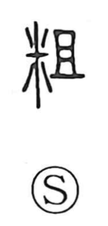

粗

Uncategorized
Kun: arai, ara, hobo | On: so
coarse ・ rough ・ crude
Explanation
A phono-semantic character: the rice element points to grain, while the component 且 supplies the on reading so and echoes the sense noted in the Shuowen of疏—coarse, rough. Originally it referred to rice that had not yet been carefully sifted, grain still mixed with husks and other refuse—rough rice. From this concrete image the character came to mean coarse or rough in general, and by extension crude or bad, said of both things and people.